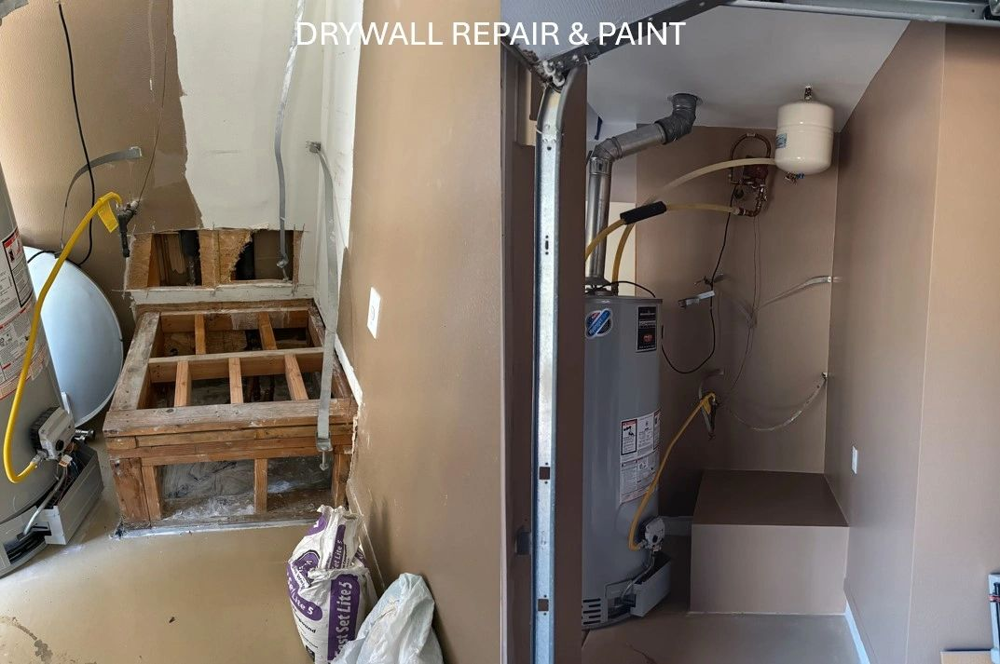
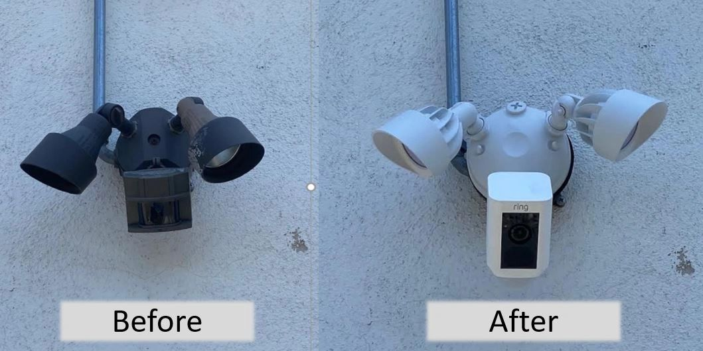
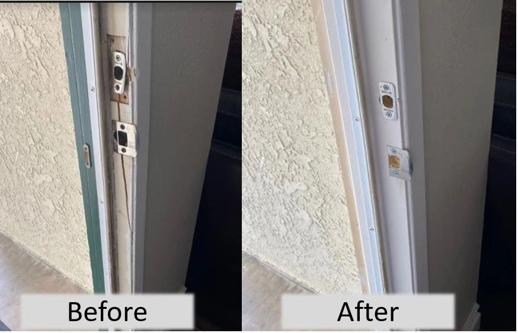
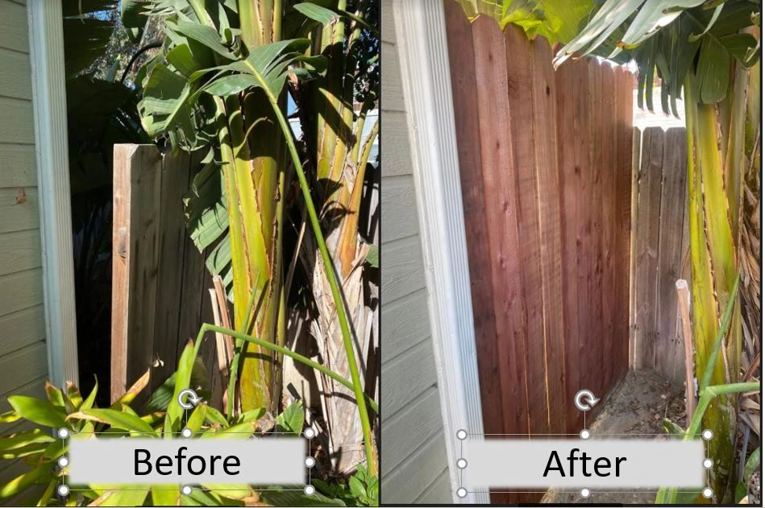
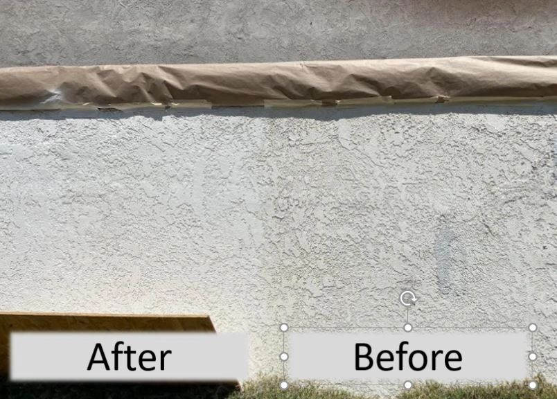

Plumbing fixes
Help with leaks, faucets, fixtures, and other small plumbing repairs.
Lake Forest • Orange County
Home maintenance & repair specialist
Need a clean, dependable fix for something around the house? OC Handyman, Inc. handles the everyday repairs and improvements Orange County homeowners actually call about — including plumbing, painting & drywall, minor electrical, woodwork, smart home help, TV mounting, tiling, and outdoor maintenance.
Recent project photos
A few examples of the clean, practical repairs and improvements homeowners request most often.

Patch, texture, and repaint work that helps a wall blend back in cleanly.

A simple plumbing upgrade with a cleaner, refreshed sink area.

Neat mounting for a Ring camera and lighting on the exterior entry.

Trim and jamb repair to help the door fit and finish the right way.

Exterior repair work that keeps the property looking maintained.

Exterior patching and paint work for a cleaner finished look.
Services
Help with leaks, faucets, fixtures, and other small plumbing repairs.
Patch, touch up, and refresh walls so rooms look clean again.
Small electrical updates around the home when you want the job handled neatly.
Trim, doors, shelves, and general carpentry touch-ups.
Support for the home tech upgrades that need a steady hand and a clean install.
Secure wall mounting with a tidy finished look.
Small tile repairs and improvement projects that keep the space polished.
Exterior touch-ups and routine repairs that help the property stay in shape.
What to expect
Call or email with the job details, and you can get the conversation started without jumping through hoops.
The service list is organized around the common repairs and improvements homeowners actually ask for.
Service area
Lake Forest, Irvine, Mission Viejo, Laguna Hills, and surrounding Orange County communities.
FAQ
Yes. Call 949-427-5147 or email Repairs@OCHandyman.com to request one.
Plumbing fixes, painting & drywall, minor electrical, woodwork, smart home help, TV mounting, tiling, and outdoor maintenance.
Based in Lake Forest and serving nearby Orange County neighborhoods.
Call the main number for the quickest response, or send an email with the job details and your address.
Contact
Reach out for a free estimate and a straightforward next step. You can call, email, or visit the current public profiles below.